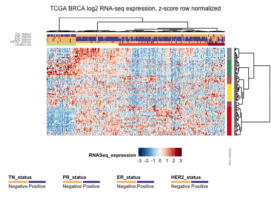

Usage
heatmap.ggplot2(eSet, col.clust = TRUE, row.clust = TRUE, col.lab = "", row.lab = "", heatmap.y.text = FALSE, heatmap.x.text = FALSE, heatmap.y.text.size = 7, heatmap.x.text.size = 6, heatmap.colorlegend.name = "val", title.text = "", col.legend.name = "", row.legend.name = "", row.scaling = "none", z.norm = FALSE, cuttree.col = 0, cuttree.row = 0, verbose = FALSE, grid.heights = NA, grid.widths = NA, show = FALSE)
Arguments
- eSet
- expression set object to plot
- col.clust
- perform column-wise hierarchical clustering (TRUE or FALSE)
- row.clust
- perform row-wise hierarchical clustering (TRUE or FALSE)
- col.lab
- column labels to include: subset of pData colnames character vector
- row.lab
- row labels to include: subset of fData colnames character vector
- heatmap.y.text
- include y axis labels for heatmap, uses rownames(eSet) (TRUE or FALSE)
- heatmap.x.text
- include x axis labels for heatmap, uses colnames(eSet)) (TRUE or FALSE)
- heatmap.y.text.size
- text size for y axis labels
- heatmap.x.text.size
- text size for x axis labels
- heatmap.colorlegend.name
- name for heatmap color legend
- title.text
- main title for the plot
- col.legend.name
- character vector for subset of col.lab to include in color legend
- row.legend.name
- character vector for subset of row.lab to include in color legend
- row.scaling
- how should rows be scaled ("none", "quantile", "z-score.all", or "z-score.capped")
- z.norm
- heatmap colors reflect z-scores rather than original values, can be TRUE if row.scaling is "none"
- cuttree.col
- number of clusters for columns, default 0: do not show cluster assignment
- cuttree.row
- number of clusters for rows, default 0: do not show cluster assignment
- verbose
- return additional clustred annotation information as well as heatmap
- grid.heights
- numeric vector of length 7 representing heights of subpanels, leave NA for default
- grid.widths
- numeric vector of length 4 represeting weights of subpanels, leave NA for default
- show
- prints the heatmap within execution of the function (TRUE or FALSE)
Description
heatmap.ggplot2 is the main function to draw and/or save the heatmap from an
expression set object
Examples
#Use example data, for data set information: ?eSet.brca.100
data(eSet.brca.100)
#Most basic plot
p1<-heatmap.ggplot2(eSet.brca.100, col.clust=FALSE, row.clust=FALSE)
#More advanced plot
p2<-heatmap.ggplot2(eSet=eSet.brca.100, col.clust=TRUE, row.clust=TRUE,
col.lab=c("HER2_status", "ER_status", "PR_status", "TN_status"), row.lab="",
heatmap.y.text=FALSE, heatmap.x.text=FALSE,
heatmap.colorlegend.name="RNASeq_expression",
title.text="TCGA BRCA log2 RNA-seq expression, z-score row normalized",
col.legend.name=c("HER2_status", "ER_status", "PR_status", "TN_status"),
row.legend.name="",
row.scaling="z-score.capped",
z.norm=FALSE,
cuttree.col=4, cuttree.row=6,
verbose=FALSE, show=FALSE)
#Display and saving options
print(p2) #to display in viewer if working in RStudio

#ggsave(p2, file="example_plot.pdf") #not ran
#ggsave(p2, file="example_plot.jpg") #not ran